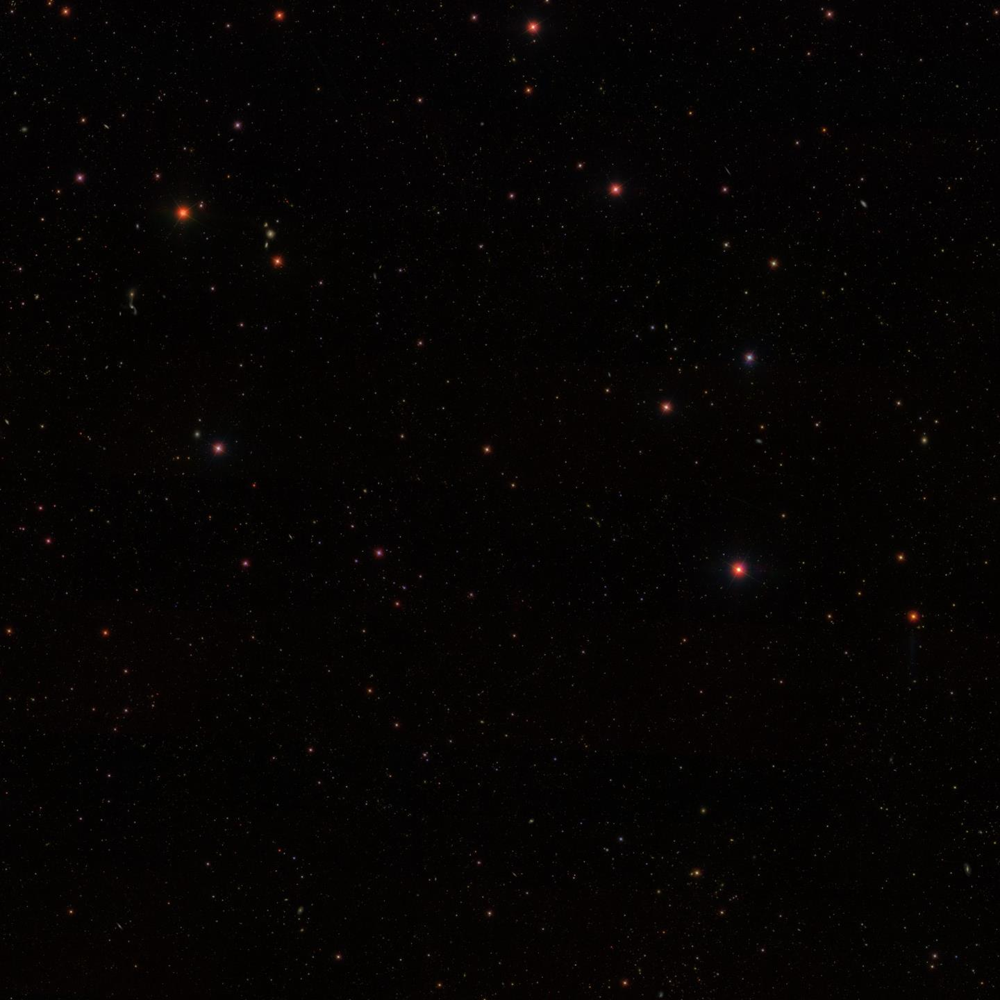

Снимок участка неба из обзора SDSS. Кружки — квазары из каталога, подпись — красное смещение z. Цвет меняется от фиолетового у близких объектов к жёлтому у самых далёких: чем больше z, тем дальше объект и тем раньше во Вселенной мы его видим. Щёлкните по кружку (или перейдите к нему клавишей Tab и нажмите Enter), чтобы открыть спектр.

Спектр — это свет квазара, разложенный по длинам волн. Широкие горбы — излучение водорода, углерода, магния и других элементов; по тому, насколько они сдвинуты, находят красное смещение z. Наведите порядок в каталоге поиском и сортировкой.
Как читать этот график
- По горизонтали — наблюдаемая длина волны λ в ангстремах (Å), по вертикали — поток в единицах 10−17 эрг/с/см²/Å.
- Короткие штриховые линии сверху подписаны названиями линий (Lyα, C IV, Mg II…). Это их лабораторные длины волн. Двигайте ползунок z: когда штрихи совпадут с горбами спектра, z найдено.
- Сиреневая полоса и отметки внизу — лес Лайман-альфа: облака межгалактического водорода поглощают свет с длиной волны короче Lyα. Чем больше z, тем гуще лес.
- Флажок «шкала в системе покоя» делит длины волн на 1 + z — так график выглядит для наблюдателя рядом с квазаром.
- z — красное смещение: во сколько раз растянулась Вселенная, пока свет летел к нам. 1 + z = λнабл / λлаб.
- В карточках: «расстояние» — сопутствующее, то есть до объекта сегодня; «свет шёл» — сколько лет длился путь света.
Таблица и графики по всем квазарам участка: расстояния считаются по вашему z, если вы его ввели, иначе по z проекта. Кнопка ниже выгружает таблицу в CSV — её можно открыть в LibreOffice или Excel.
На узком экране таблица прокручивается по горизонтали.
Средние (композитные) спектры квазаров разных эпох в системе покоя: каждый спектр «растянут обратно» на (1+z) и усреднён, то есть показан таким, каким его увидел бы наблюдатель рядом с квазаром. Линии водорода, углерода, кремния, магния и кислорода видны во все эпохи — тяжёлые элементы были в квазарах уже через 1–2 млрд лет после Большого взрыва.
Квазары и блазары
Блазар — квазар, джет которого направлен почти на нас. У FSRQ широкие линии, как у обычных квазаров; у лацертид (BL Lac) линий почти нет, поэтому автоматическое определение z по спектру для них ненадёжно.
На узком экране таблица прокручивается по горизонтали.
Свет далёкого квазара идёт к нам сквозь облака межгалактического водорода. Каждое облако оставляет узкую линию поглощения, и в спектре получается частокол провалов — «лес Лайман-альфа». Гипотеза проекта: число линий поглощения (и доля поглощённого света DA) растёт с красным смещением квазара. Участок (1+z)·[1080; 1160] Å; континуум — степенной закон по «чистым» окнам краснее Lyα. Выборка: квазары участка с z ≥ 2,2 и 40 ярких далёких квазаров из окрестности, после контроля качества.
На узком экране таблица прокручивается по горизонтали.
Плоская модель ΛCDM с параметрами Planck 2018: H0 = 67,66 км/с/Мпк, Ωm = 0,3111, ΩΛ = 0,6889. Введите z — калькулятор посчитает расстояния и возраст Вселенной в этот момент.
Как определить красное смещение
- Найдите в спектре 2–3 широкие яркие линии (горбы).
- Предположите, какая это линия (по таблице с лабораторными длинами волн), и щёлкните по её пику: z = λнабл / λлаб − 1.
- Проверьте: остальные линии должны встать на свои горбы. Если не встали — гипотеза неверна, попробуйте другую линию.
- Если синее яркой линии спектр «изрезан» узкими провалами — это лес Лайман-альфа, а линия — Lyα (z > 2).
- Ловушка: Lyα далёкого квазара легко принять за Mg II близкого (отношение длин волн 2798/1216 ≈ 2,30 — не путайте). Решает лес.
Формулы
1 + z = λнабл / λлаб = a(сейчас) / a(тогда) — во сколько раз растянулась Вселенная, пока шёл свет.
Сопутствующее расстояние DC = (c/H0) ∫0z dz′ / E(z′), E(z) = √(Ωm(1+z)³ + ΩΛ).
Возраст плоской ΛCDM: t(z) = 2 / (3H0√ΩΛ) · arsh(√(ΩΛ/Ωm) (1+z)−3/2).
Глоссарий
Лабораторные длины волн линий квазаров
Источники
- Lyke B. W. et al. The SDSS Quasar Catalog: Sixteenth Data Release // ApJS. 2020. 250. 8.
- Vanden Berk D. E. et al. Composite Quasar Spectra from the SDSS // AJ. 2001. 122. 549.
- Rauch M. The Lyman Alpha Forest in the Spectra of QSOs // ARA&A. 1998. 36. 267.
- Faucher-Giguère C.-A. et al. The Lyα forest effective optical depth // ApJ. 2008. 681. 831.
- Bañados E. et al. An 800-million-solar-mass black hole at z = 7,5 // Nature. 2018. 553. 473.
- Planck Collaboration. Planck 2018 results. VI. Cosmological parameters // A&A. 2020. 641. A6.
- Vestergaard M., Osmer P. S. Mass functions of active black holes // ApJ. 2009. 699. 800.
- Urry C. M., Padovani P. Unified schemes for radio-loud AGN // PASP. 1995. 107. 803.
- Hogg D. W. Distance measures in cosmology // arXiv:astro-ph/9905116.
Коротко о результате: что получилось измерить, какие выводы следуют из данных и какие объекты каталога требуют осторожности.